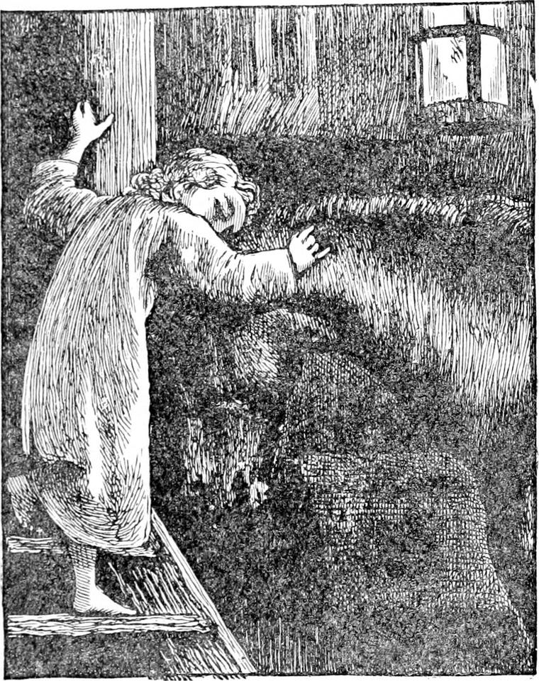
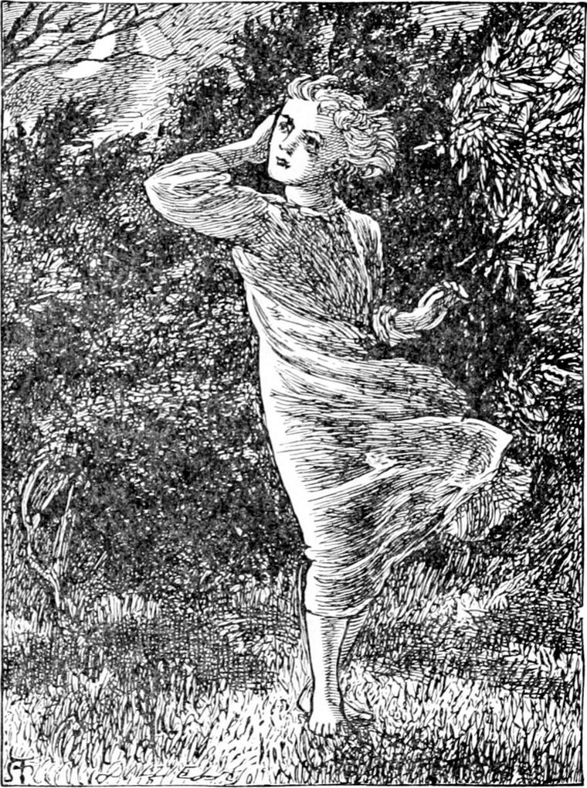
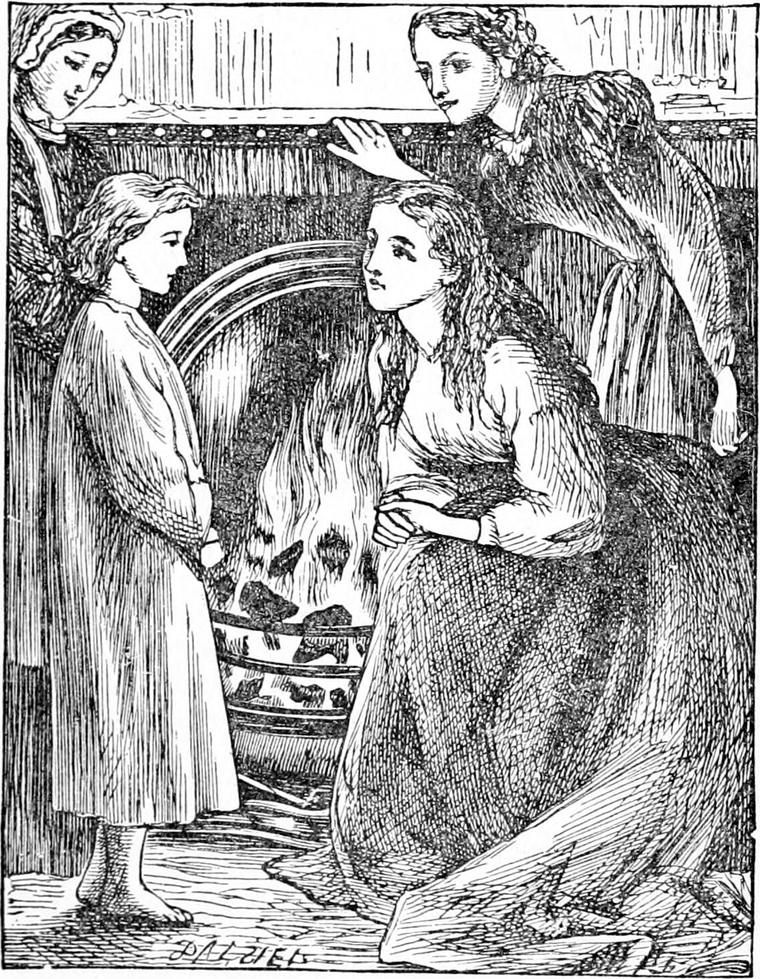
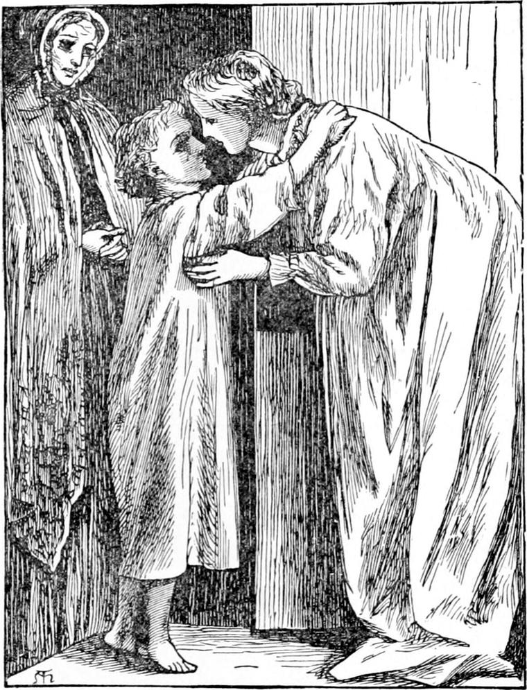

WHEN Diamond got round the corner of the hay, for a moment he hesitated. The stair by which he would naturally have gone down to the door was at the other side of the loft, and looked very black indeed; for it was full of North Wind's hair, as she descended before him. And just beside him was the ladder going straight down into the stable, up which his father always came to fetch the hay for Diamond's dinner. Through the opening in the floor the faint gleam of the stable lantern was enticing, and Diamond thought he would run down that way.
The stair went close past the loose-box in which Diamond the horse lived. When Diamond the boy was half-way down, he remembered that it was of no use to go this way, for the stable-door was locked. But at the same moment there was horse Diamond's great head poked out of his box on to the ladder, for he knew boy Diamond although he was in his night-gown, and wanted him to pull his ears for him. This Diamond did very gently for a minute or so, and patted and stroked his neck too, and kissed the big horse, and had begun to take the bits of straw and hay out of his mane, when all at once he recollected that the Lady North Wind was waiting for him in the yard.
“Good night, Diamond,” he said, and darted up the ladder, across the loft, and down the stair to the door. But when he got out into the yard, there was no lady.

Now it is always a dreadful thing to think there is somebody and find nobody. Children in particular have not made up their minds to it; they generally cry at nobody, especially when they wake up at night. But it was an especial disappointment to Diamond, for his little heart had been beating with joy: the face of the North Wind was so grand! To have a lady like that for a friend—with such long hair, too! Why, it was longer than twenty Diamonds' tails! She was gone. And there he stood, with his bare feet on the stones of the paved yard.
It was a clear night overhead, and the stars were shining. Orion in particular was making the most of his bright belt and golden sword. But the moon was only a poor thin crescent. There was just one great, jagged, black and gray cloud in the sky, with a steep side to it like a precipice; and the moon was against this side, and looked as if she had tumbled off the top of the cloud-hill, and broken herself in rolling down the precipice. She did not seem comfortable, for she was looking down into the deep pit waiting for her. At least that was what Diamond thought as he stood for a moment staring at her. But he was quite wrong, for the moon was not afraid, and there was no pit she was going down into, for there were no sides to it, and a pit without sides to it is not a pit at all. Diamond, however, had not been out so late before in all his life, and things looked so strange about him!—just as if he had got into Fairyland, of which he knew quite as much as anybody; for his mother had no money to buy books to set him wrong on the subject. I have seen this world—only sometimes, just now and then, you know—look as strange as ever I saw Fairyland. But I confess that I have not yet seen Fairyland at its best. I am always going to see it so some time. But if you had been out in the face and not at the back of the North Wind, on a cold rather frosty night, and in your night-gown, you would have felt it all quite as strange as Diamond did. He cried a little, just a little, he was so disappointed to lose the lady: of course, you, little man, wouldn't have done that! But for my part, I don't mind people crying so much as I mind what they cry about, and how they cry—whether they cry quietly like ladies and gentlemen, or go shrieking like vulgar emperors, or ill-natured cooks; for all emperors are not gentlemen, and all cooks are not ladies—nor all queens and princesses for that matter, either.
But it can't be denied that a little gentle crying does one good. It did Diamond good; for as soon as it was over he was a brave boy again.
“She shan't say it was my fault, anyhow!” said Diamond. “I daresay she is hiding somewhere to see what I will do. I will look for her.”
So he went round the end of the stable towards the kitchen-garden. But the moment he was clear of the shelter of the stable, sharp as a knife came the wind against his little chest and his bare legs. Still he would look in the kitchen-garden, and went on. But when he got round the weeping-ash that stood in the corner, the wind blew much stronger, and it grew stronger and stronger till he could hardly fight against it. And it was so cold! All the flashy spikes of the stars seemed to have got somehow into the wind. Then he thought of what the lady had said about people being cold because they were not with the North Wind. How it was that he should have guessed what she meant at that very moment I cannot tell, but I have observed that the most wonderful thing in the world is how people come to understand anything. He turned his back to the wind, and trotted again towards the yard; whereupon, strange to say, it blew so much more gently against his calves than it had blown against his shins that he began to feel almost warm by contrast.
You must not think it was cowardly of Diamond to turn his back to the wind: he did so only because he thought Lady North Wind had said something like telling him to do so. If she had said to him that he must hold his face to it, Diamond would have held his face to it. But the most foolish thing is to fight for no good, and to please nobody.

Well, it was just as if the wind was pushing Diamond along. If he turned round, it grew very sharp on his legs especially, and so he thought the wind might really be Lady North Wind, though he could not see her, and he had better let her blow him wherever she pleased. So she blew and blew, and he went and went, until he found himself standing at a door in a wall, which door led from the yard into a little belt of shrubbery, flanking Mr. Coleman's house. Mr. Coleman was his father's master, and the owner of Diamond. He opened the door, and went through the shrubbery, and out into the middle of the lawn, still hoping to find North Wind. The soft grass was very pleasant to his bare feet, and felt warm after the stones of the yard; but the lady was nowhere to be seen. Then he began to think that after all he must have done wrong, and she was offended with him for not following close after her, but staying to talk to the horse, which certainly was neither wise nor polite.
There he stood in the middle of the lawn, the wind blowing his night-gown till it flapped like a loose sail. The stars were very shiny over his head; but they did not give light enough to show that the grass was green; and Diamond stood alone in the strange night, which looked half solid all about him. He began to wonder whether he was in a dream or not. It was important to determine this; “for,” thought Diamond, “if I am in a dream, I am safe in my bed, and I needn't cry. But if I'm not in a dream, I'm out here, and perhaps I had better cry, or, at least, I'm not sure whether I can help it.” He came to the conclusion, however, that, whether he was in a dream or not, there could be no harm in not crying for a little while longer: he could begin whenever he liked.
The back of Mr. Coleman's house was to the lawn, and one of the drawing-room windows looked out upon it. The ladies had not gone to bed; for the light was still shining in that window. But they had no idea that a little boy was standing on the lawn in his night-gown, or they would have run out in a moment. And as long as he saw that light, Diamond could not feel quite lonely. He stood staring, not at the great warrior Orion in the sky, nor yet at the disconsolate, neglected moon going down in the west, but at the drawing-room window with the light shining through its green curtains. He had been in that room once or twice that he could remember at Christmas times; for the Colemans were kind people, though they did not care much about children.
All at once the light went nearly out: he could only see a glimmer of the shape of the window. Then, indeed, he felt that he was left alone. It was so dreadful to be out in the night after everybody was gone to bed! That was more than he could bear. He burst out crying in good earnest, beginning with a wail like that of the wind when it is waking up.
Perhaps you think this was very foolish; for could he not go home to his own bed again when he liked? Yes; but it looked dreadful to him to creep up that stair again and lie down in his bed again, and know that North Wind's window was open beside him, and she gone, and he might never see her again. He would be just as lonely there as here. Nay, it would be much worse if he had to think that the window was nothing but a hole in the wall.
At the very moment when he burst out crying, the old nurse who had grown to be one of the family, for she had not gone away when Miss Coleman did not want any more nursing, came to the back door, which was of glass, to close the shutters. She thought she heard a cry, and, peering out with a hand on each side of her eyes like Diamond's blinkers, she saw something white on the lawn. Too old and too wise to be frightened, she opened the door, and went straight towards the white thing to see what it was. And when Diamond saw her coming he was not frightened either, though Mrs. Crump was a little cross sometimes; for there is a good kind of crossness that is only disagreeable, and there is a bad kind of crossness that is very nasty indeed. So she came up with her neck stretched out, and her head at the end of it, and her eyes foremost of all, like a snail's, peering into the night to see what it could be that went on glimmering white before her. When she did see, she made a great exclamation, and threw up her hands. Then without a word, for she thought Diamond was walking in his sleep, she caught hold of him, and led him towards the house. He made no objection, for he was just in the mood to be grateful for notice of any sort, and Mrs. Crump led him straight into the drawing-room.

Now, from the neglect of the new housemaid, the fire in Miss Coleman's bedroom had gone out, and her mother had told her to brush her hair by the drawing-room fire—a disorderly proceeding which a mother's wish could justify. The young lady was very lovely, though not nearly so beautiful as North Wind; and her hair was extremely long, for it came down to her knees—though that was nothing at all to North Wind's hair. Yet when she looked round, with her hair all about her, as Diamond entered, he thought for one moment that it was North Wind, and, pulling his hand from Mrs. Crump's, he stretched out his arms and ran towards Miss Coleman. She was so pleased that she threw down her brush, and almost knelt on the floor to receive him in her arms. He saw the next moment that she was not Lady North Wind, but she looked so like her he could not help running into her arms and bursting into tears afresh. Mrs. Crump said the poor child had walked out in his sleep, and Diamond thought she ought to know, and did not contradict her for anything he knew, it might be so indeed. He let them talk on about him, and said nothing; and when, after their astonishment was over, and Miss Coleman had given him a sponge-cake, it was decreed that Mrs. Crump should take him to his mother, he was quite satisfied.

His mother had to get out of bed to open the door when Mrs. Crump knocked. She was indeed surprised to see her boy; and having taken him in her arms and carried him to his bed, returned and had a long confabulation with Mrs. Crump, for they were still talking when Diamond fell fast asleep, and could hear them no longer.